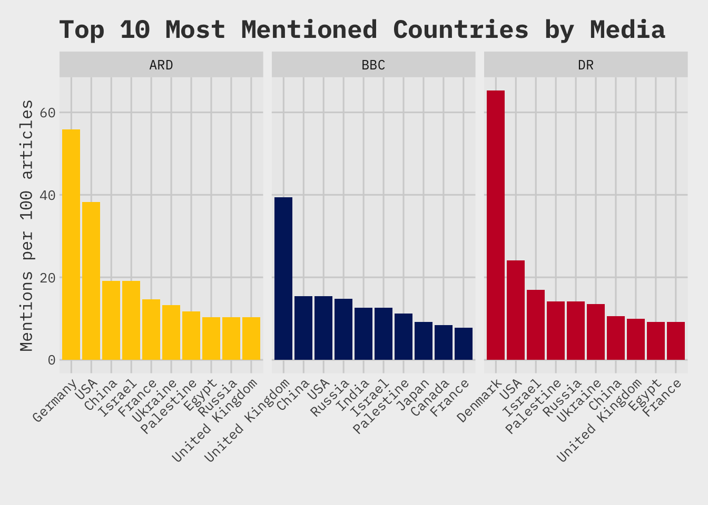
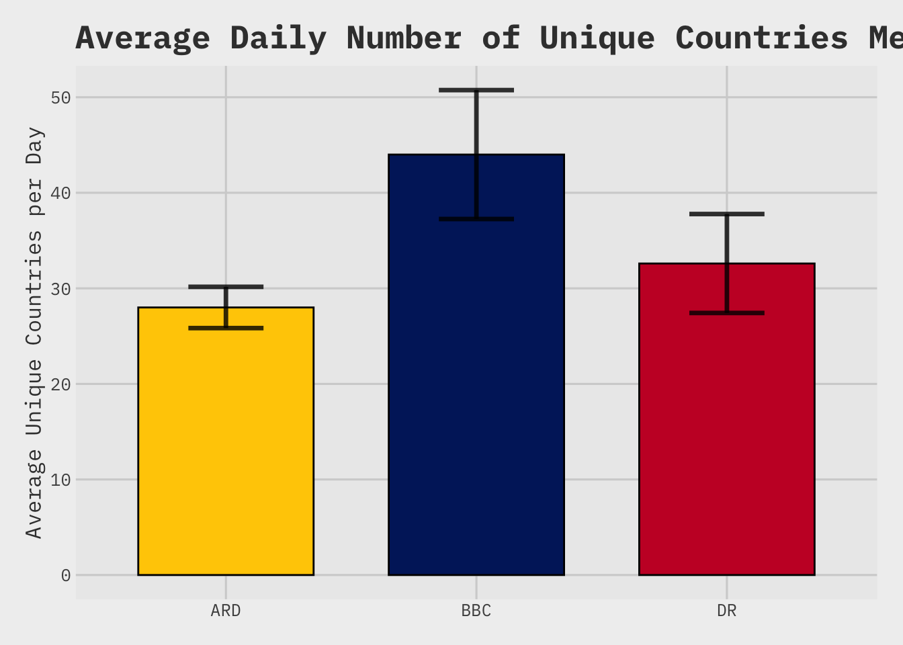
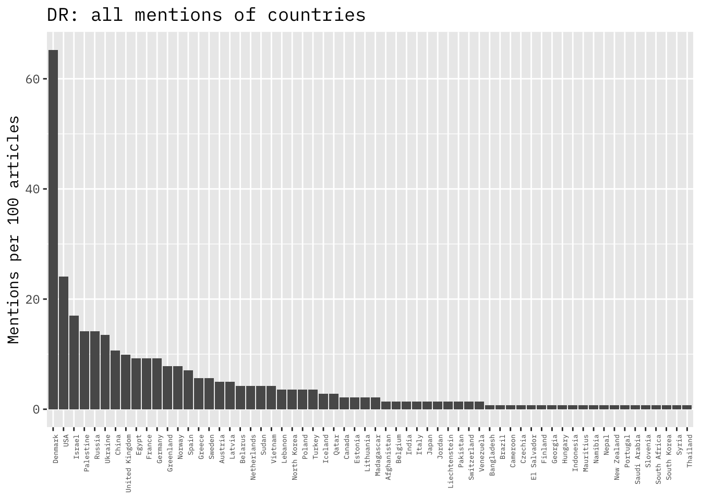
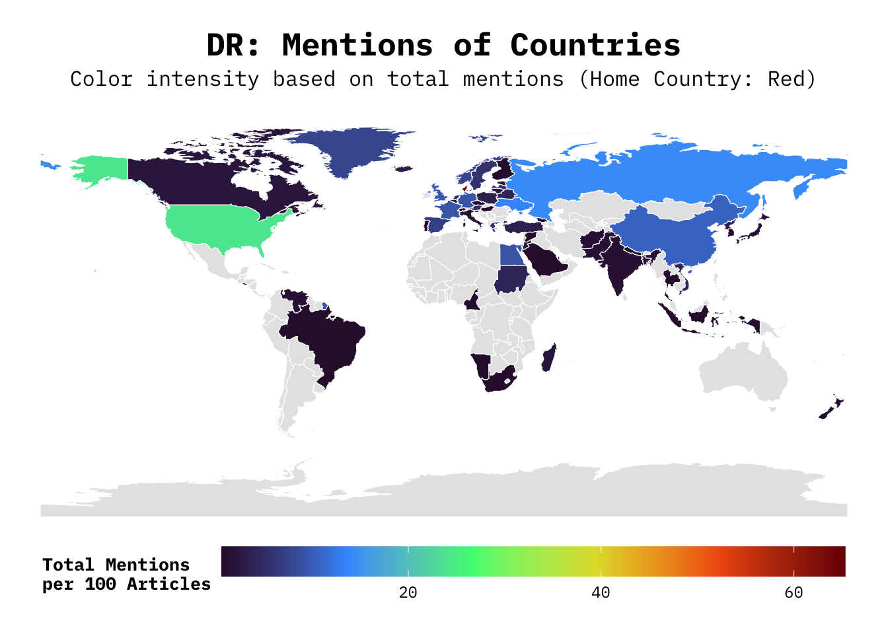
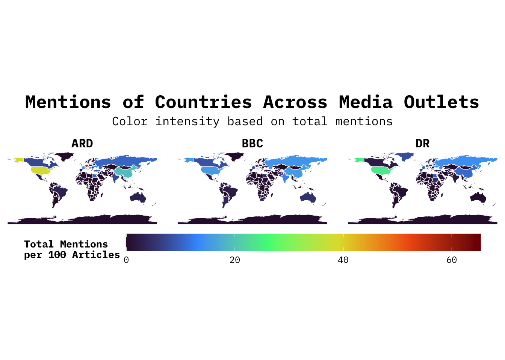
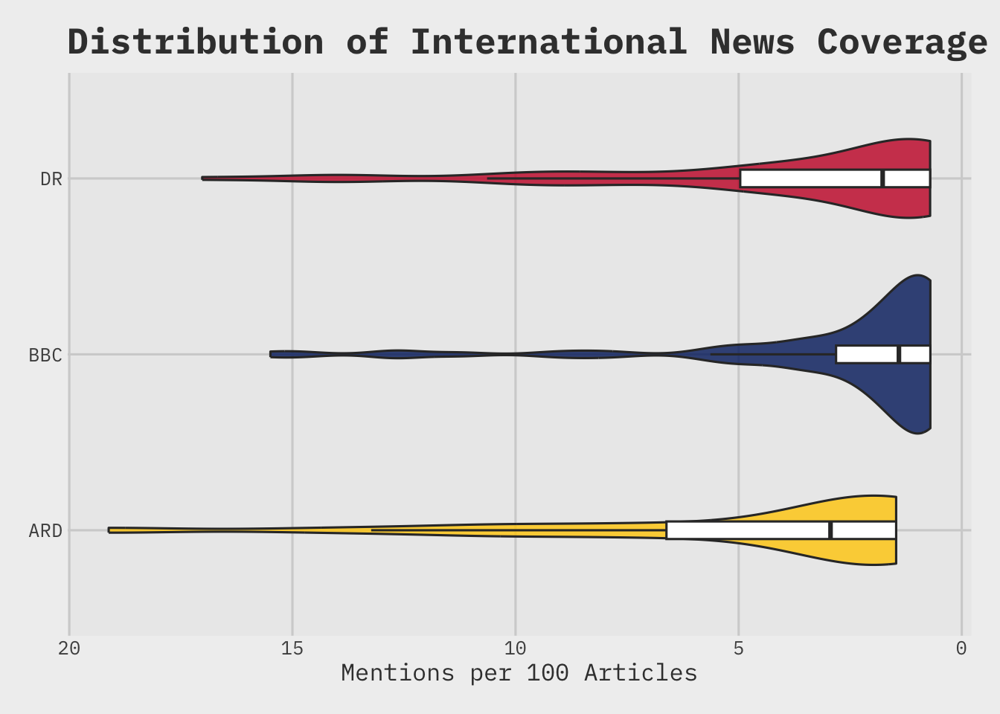

Rows: 478 Columns: 6
── Column specification ────────────────────────────────────────────────────────
Delimiter: ","
chr (4): URL, media, type_article, countries
dbl (1): is_nyhed
date (1): date
ℹ Use `spec()` to retrieve the full column specification for this data.
ℹ Specify the column types or set `show_col_types = FALSE` to quiet this message.
# font_import()# fonts("IBM Plex Mono")
Numbers
dataframes
country_analysis
articles_df_alt <- articles_df |>filter(is_nyhed ==1)total_articles_per_media <- articles_df_alt |>group_by(media) |>summarise(total_articles =n(), .groups ='drop')country_analysis <- articles_df_alt |>filter(countries !="NO_COUNTRIES") |># Har ikke fundeet et sted hvor denne var brugebarseparate_rows(countries, sep =",") |># Clean up whitespace around country namesmutate(countries =str_trim(countries)) |>count(media, countries, name ="mentions") |>left_join(total_articles_per_media, by ="media") |>mutate(mentions_per_100_articles = (mentions / total_articles) *100) %>%arrange(media, desc(mentions_per_100_articles)) |>group_by(media) |>mutate(total_country_mentions =sum(mentions)) |>mutate(share_of_voice = ((mentions / total_country_mentions ) *100))# The 10 most mentioned countries for each media top_10_countries <- country_analysis %>%group_by(media) %>%# Select the 10 rows with the highest value in the mentions column.# Crucially, with_ties = FALSE breaks any ties and guarantees only 10 rows.slice_max(order_by = mentions_per_100_articles, n =10, with_ties =FALSE ) %>%ungroup() # Good practice to ungroup after you're done.
Der kigges på 2 ens men også ret forskellige parametre
mentions_per_100_articles: siger sig selv. Hvis man tager 100 artikler, hvor mange gange er omtalte land så nævnt?
share_of_voice: hvor stor en andel af al land-omtale for givent medie står dette land for
per_day
per_day <- articles_df_alt |>filter(countries !="NO_COUNTRIES") |>group_by(media,date) |>separate_rows(countries, sep =",") |>summarise(n_countries =n_distinct(countries), .groups ='drop') |>filter(media !='ARD'| date !='2025-10-11') # remove later, var bare mærkelig
Summaries
summary_stats <- country_analysis %>%group_by(media) %>%summarise(n_countries =n_distinct(countries),more_than_once =n_distinct(countries[mentions_per_100_articles >2]),gini_coefficient =Gini(mentions_per_100_articles),.groups ='drop'# Recommended to drop grouping after summarise )# --- Analysis 2: Calculate the "long tail" average ---long_tail_avg <- country_analysis %>%group_by(media) %>%arrange(desc(mentions_per_100_articles)) %>%slice(5:n()) %>%summarise(avg_mentions =mean(mentions_per_100_articles),.groups ='drop' )# --- Join the two results together ---# The 'by = "media"' argument tells the join to match rows based on the media column.final_summary <-left_join(summary_stats, long_tail_avg, by ="media")final_summary
# A tibble: 3 × 5
media n_countries more_than_once gini_coefficient avg_mentions
<chr> <int> <int> <dbl> <dbl>
1 ARD 49 28 0.580 4.05
2 BBC 83 35 0.585 2.42
3 DR 62 32 0.622 3.34
Plots
Barplot - top 10
colors_for_countries =c("#FFCC00","#012169","#C8102E")media_bar <- top_10_countries |>mutate(country_new =str_replace_all(countries, "United States of America", "USA")) |>ggplot(aes(y =reorder_within(country_new, -mentions_per_100_articles, media), x = mentions_per_100_articles,fill = media )) +geom_col() +scale_y_reordered() +# This partner function is essentialcoord_flip() +labs(title ="Top 10 Most Mentioned Countries by Media",# Axes are flipped, so the labels need to be swappedx ="Mentions per 100 articles",y ="" ) +theme_fivethirtyeight() +facet_wrap(~ media, scales ="free_x") +theme(axis.title =element_text(),axis.text.x =element_text(angle =45, hjust =1),text =element_text(family ="IBM Plex Mono"),legend.title =element_text(size =200),legend.position ="none" ) +scale_fill_manual(values = colors_for_countries )media_bar

Barplot - unique countries per day
per_day |>group_by(media) |>summarise(mean_val =mean(n_countries), sd_val =sd(n_countries), .groups ='drop') |>ggplot(aes(x = media, y = mean_val, fill = media)) +# Use 'geom_col()' for pre-summarised datageom_col(width =0.7, color ="black", linewidth =0.5) +geom_errorbar(aes(ymin = mean_val - sd_val, ymax = mean_val + sd_val),width =0.3, linewidth =1.2, alpha =0.8,color ="black" ) +labs(title ="Average Daily Number of Unique Countries Mentioned",y ="Average Unique Countries per Day", x ="Media Outlet" ) +theme_fivethirtyeight() +theme(axis.title.x =element_blank(),axis.title =element_text(),text =element_text(family ="IBM Plex Mono"),legend.title =element_text(size =200),legend.position ="none" ) +scale_fill_manual(values = colors_for_countries )

Undersøg om der er signifikant forskel.
anova_result1 <- per_day |>anova_test(formula = n_countries ~ media, # Test the effect of 'media' on 'n_countries'effect.size ="pes" )get_anova_table(anova_result1)
ANOVA Table (type II tests)
Effect DFn DFd F p p<.05 pes
1 media 2 11 11.392 0.002 * 0.674
mere data mangler, især for ARD
# DR vs. ARD t_test_DR_ARD <- per_day |>filter(media %in%c("DR", "ARD")) |>anova_test(formula = n_countries ~ media, # Test the effect of 'media' on 'n_countries'effect.size ="pes" )get_anova_table(t_test_DR_ARD)
ANOVA Table (type II tests)
Effect DFn DFd F p p<.05 pes
1 media 1 7 2.716 0.143 0.28
# DR vs. BBC t_test_DR_BBC <- per_day |>filter(media %in%c("DR", "BBC")) |>anova_test(formula = n_countries ~ media, # Test the effect of 'media' on 'n_countries'effect.size ="pes" )get_anova_table(t_test_DR_BBC)
ANOVA Table (type II tests)
Effect DFn DFd F p p<.05 pes
1 media 1 8 8.988 0.017 * 0.529
Point plot DR
country_analysis |>filter(media =='DR') |>mutate(country_new =str_replace_all(countries, "United States of America", "USA")) |>mutate(country_new =fct_reorder(country_new, mentions_per_100_articles, .desc =TRUE) ) |># 3. Use the NEW column 'country_new' for the x-aestheticggplot(aes(x = country_new, y = mentions_per_100_articles)) +geom_col() +# REMOVED: geom_smooth(method = 'loess') as it's not appropriate for categorical Xlabs(title ="DR: all mentions of countries",y ="Mentions per 100 articles" ) +theme(axis.title.x =element_blank(),axis.title =element_text(),axis.text.x =element_text(angle =90, hjust =1, size =5),text =element_text(family ="IBM Plex Mono"),legend.title =element_text(size =200),legend.position ="none" )

World map
country_totals_for_map <- country_analysis |>filter(media =='DR') |>group_by(countries) |>summarise(total_mentions =sum(mentions_per_100_articles), .groups ='drop') |>mutate(name_for_join =case_when(TRUE~ countries ))world_map <-ne_countries(scale ="medium", returnclass ="sf")world_map_data <- world_map %>%left_join(country_totals_for_map, by =c("name"="name_for_join"))# Create the map plotmap_plot <-ggplot(data = world_map_data) +geom_sf(aes(fill = total_mentions), color ="white", size =0.2) +scale_fill_viridis_c(option ="turbo", na.value ="grey90", name ="Total Mentions\nper 100 Articles" ) +labs(title ="DR: Mentions of Countries",subtitle ="Color intensity based on total mentions (Home Country: Red)" ) +theme_void() +theme(plot.title =element_text(hjust =0.5, size =18, face ="bold", margin =margin(b =5)),plot.subtitle =element_text(hjust =0.5, size =12, margin =margin(b =10)),legend.position ="bottom",legend.key.width =unit(2.5, "cm"),legend.title =element_text(size =10, face ="bold"),legend.text =element_text(size =9),text =element_text(family ="IBM Plex Mono") )# 5. Display the map plotprint(map_plot)

BBC
country_totals_for_map <- country_analysis |>filter(media =='BBC') |>group_by(countries) |>summarise(total_mentions =sum(mentions_per_100_articles), .groups ='drop') |>mutate(name_for_join =case_when(TRUE~ countries ))world_map <-ne_countries(scale ="medium", returnclass ="sf")world_map_data <- world_map %>%left_join(country_totals_for_map, by =c("name"="name_for_join"))# Create the map plotmap_plot <-ggplot(data = world_map_data) +geom_sf(aes(fill = total_mentions), color ="white", size =0.2) +scale_fill_viridis_c(option ="turbo", na.value ="grey90", name ="Total Mentions\nper 100 Articles" ) +labs(title ="BBC: Mentions of Countries",subtitle ="Color intensity based on total mentions (Home Country: Red)" ) +theme_void() +theme(plot.title =element_text(hjust =0.5, size =18, face ="bold", margin =margin(b =5)),plot.subtitle =element_text(hjust =0.5, size =12, margin =margin(b =10)),legend.position ="bottom",legend.key.width =unit(2.5, "cm"),legend.title =element_text(size =10, face ="bold"),legend.text =element_text(size =9),text =element_text(family ="IBM Plex Mono") )# 5. Display the map plotprint(map_plot)
facet - alle tre
country_totals_for_map <- country_analysis |>group_by(media, countries) |>summarise(total_mentions =sum(mentions_per_100_articles), .groups ='drop') |>mutate(name_for_join = countries)world_map <-ne_countries(scale ="medium", returnclass ="sf")media_outlets <-c("DR", "ARD", "BBC")map_template <- world_map |>select(name, geometry) |># The use of st_drop_geometry() is key to separate the data and geometry before crossing# Convert to a regular tibble for crossing, keeping 'name'st_drop_geometry() %>%rename(name_for_join = name) %>%# Use crossing to get all combinations of countries and media outlets tidyr::crossing(media = media_outlets) world_map_data <- map_template |>left_join(world_map |>select(name, geometry), by =c("name_for_join"="name"), relationship ="many-to-many") |>st_as_sf() |>left_join(country_totals_for_map, by =c("name_for_join", "media"), relationship ="many-to-many") |>mutate(total_mentions =replace_na(total_mentions, 0))map_plot <-ggplot(data = world_map_data) +geom_sf(aes(fill = total_mentions), color ="white", linewidth =0.2) +scale_fill_viridis_c(option ="turbo",na.value ="grey90", name ="Total Mentions\nper 100 Articles",limits =c(0, max(world_map_data$total_mentions, na.rm =TRUE)) ) +facet_wrap(~ media) +labs(title ="Mentions of Countries Across Media Outlets",subtitle ="Color intensity based on total mentions" ) +theme_void() +theme(plot.title =element_text(hjust =0.5, size =18, face ="bold", margin =margin(b =5)),plot.subtitle =element_text(hjust =0.5, size =12, margin =margin(b =10)),legend.position ="bottom",legend.key.width =unit(2.5, "cm"),legend.title =element_text(size =10, face ="bold"),legend.text =element_text(size =9),strip.text =element_text(size =12, face ="bold"),text =element_text(family ="IBM Plex Mono") )map_plot

Violin plot
violin_plot <- country_analysis |>group_by(media) |>arrange(desc(mentions_per_100_articles)) |>slice(3:n()) |>ungroup() |># exclude top 2 countriesggplot(aes(x = mentions_per_100_articles,y = media,fill = media )) +geom_violin(alpha =0.8) +geom_boxplot(width =0.1, fill ="white", outlier.shape =NA) +scale_x_reverse() +labs(title ="Distribution of International News Coverage",x ="Mentions per 100 Articles",y ="Media Outlet" ) +theme_fivethirtyeight() +theme(axis.title =element_text(),axis.title.y =element_blank(),text =element_text(family ="IBM Plex Mono"),legend.title =element_text(size =200),legend.position ="none" ) +scale_fill_manual(values = colors_for_countries )violin_plot

Correlation (ikke fedt)
wide_data <- country_analysis %>%select(countries, media, mentions_per_100_articles) %>%pivot_wider(names_from = media,values_from = mentions_per_100_articles,values_fill =0 )correlation_matrix <- wide_data %>%select(-countries) %>%cor(method ="spearman")correlation_matrix[upper.tri(correlation_matrix, diag =TRUE)] <-NAcorrelation_long <-as.data.frame(correlation_matrix) %>% tibble::rownames_to_column("media1") %>%pivot_longer(cols =-media1,names_to ="media2",values_to ="correlation" ) %>%# Remove the NA rows to only plot the lower trianglefilter(!is.na(correlation))print(correlation_long)
# A tibble: 3 × 3
media1 media2 correlation
<chr> <chr> <dbl>
1 BBC ARD 0.423
2 DR ARD 0.420
3 DR BBC 0.373